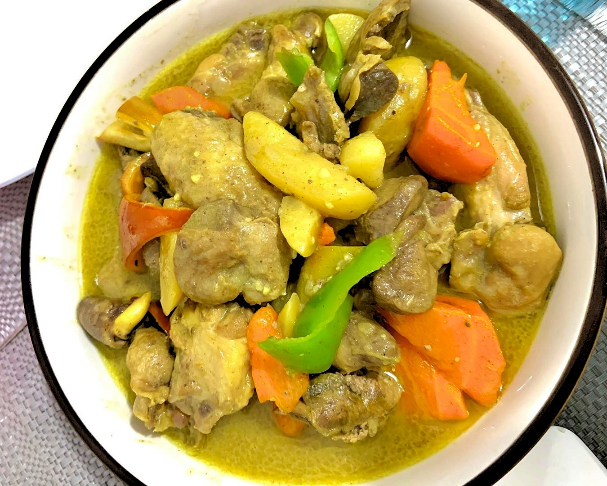

Chicken Curry

Chicken Curry
Chicken Curry This Pinoy Chicken Curry recipe is
the Filipino version of the popular chicken curry dish. It is delicious
and easy to cook. The sauce is rich, creamy, and flavorful. It goes well
with warm white rice
Pinoy Chicken Curry Recipe
This is a Filipino version of Chicken Curry. It is rich and tasty.
Delicious!
Ingredients
- 2 lbs. chicken cut into serving pieces
- 1 tablespoon curry powder
- 1 piece potato cubed
- 4 cloves garlic minced
- 2 stalks celery sliced
- 1 piece red bell pepper sliced
- 2 pieces long green pepper
- 1 piece onion chopped
- 2 thumbs ginger cut into strips
- 2 cups coconut milk
- 1/2 cup all-purpose cream optional
- 1 cup water
- fish sauce and ground black pepper to taste
Instructions
-
Heat oil in a pan. Fry potato for 1 minute per side. Remove from the
pan. Set aside.
-
Using the remaining oil, saute garlic, onion, celery, and ginger until
onion softens.
-
Add the chicken pieces. Saute until the outer part of the chicken turns
light brown.
- Add 1 tablespoon fish sauce. Continue sautéing for 1 minute.
- Pour-in coconut milk and water. Let boil.
- Add curry powder. Stir until the powder is completely diluted. Cover the pot and continue cooking between low to medium heat until the liquid reduces to half.
- Add the red bell pepper and pan fried-potato. Cook for 5 minutes.
- Season with fish sauce and ground black pepper as needed. You can also add all-purpose cream if desired.
- Transfer to a serving bowl. Serve and enjoy!
Back To Top
Back To Main Menu